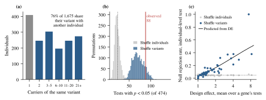
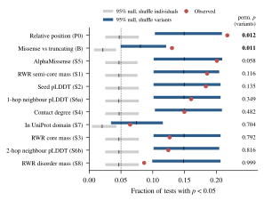
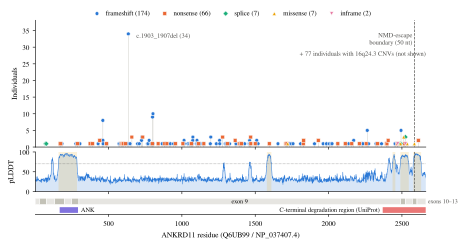
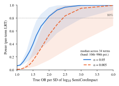

Background. Genotype–phenotype correlations inform prognosis and variant interpretation in rare Mendelian disorders, but usually come from small, literature-derived cohorts in which variants recur and patients are reported together. We examined how recurrence and shared publication sources affect inference about relationships intended to generalise across distinct variants.
Methods. From phenopacket-store v0.1.27 we assembled 5,703 individuals with one causative allele in 98 genes. Within genes, we tested AlphaFold-derived and predicted-effect features of missense variants, relative position, and a missense-versus-truncating contrast against Human Phenotype Ontology terms. Nulls were generated by permuting features among individuals or among distinct variants, and compared with an exploratory design-effect approximation.
Results. In 44 genes with testable terms, 1,675 missense carriers represented 670 distinct variants from 212 publications; the median gene had 15 distinct variants and 3 publications. Overall, 76% of carriers shared their variant with another individual, and 74% of same-variant pairs came from the same publication. For the primary structural feature, nominal p < 0.05 occurred in 4.7% of 474 tests under individual-level and 14.9% under variant-level permutation; the design-effect approximation predicted 73.3 rejections against 70.6 observed (internal assessment only). Under the variant-level null, relative position (p = 0.012) and missense-versus-truncating class (p = 0.011) exceeded expectation; AlphaMissense (p = 0.058) and structural features did not. Variant-class discoveries fell from 32 in 15 genes to 21 in 9 genes; signals concentrated at single hotspots, such as SPTAN1 p.Arg19Trp and LMNA Arg482, were attenuated.
Conclusions. In literature-derived Mendelian cohorts, distinct variants rather than patients limit the evidence for relationships intended to generalise across variants. Analyses should report the carriers, distinct variants and publications behind each genotype group and state their inferential target. The design-effect diagnostic needs simulation-based calibration and external validation; these results do not indicate that published variant-specific associations are false.
Rare diseases are individually uncommon but collectively affect an estimated 3.5–5.9% of the population, and most have a genetic cause [1]. For these disorders, genotype–phenotype correlations do practical work. When particular variants or classes of variant predict organ involvement or severity, they inform prognosis, surveillance and counselling. They contribute to variant interpretation, where a phenotype that is highly specific for a gene's disorder can count as supporting evidence of pathogenicity [2]. They also generate mechanistic hypotheses, for example that missense and truncating variants in one gene act through different mechanisms.
Because each disorder is uncommon, much of this evidence comes from case reports and small series. The Global Alliance for Genomics and Health (GA4GH) Phenopacket schema [3], the Human Phenotype Ontology (HPO) [4] and phenopacket-store [5], a corpus of case-level phenotype records curated from the literature, now allow such evidence to be aggregated and analysed across hundreds of disorders. GPSEA applied this approach to 85 cohorts and reported 253 significant correlations in 48 of them, using cohort-specific genotype predicates and tests that included Fisher's exact test [6]. In parallel, AlphaFold [7,8] and AlphaMissense [9] supply structural and predicted-effect descriptors for nearly every possible missense variant. Pathogenic missense variants cluster in protein structures [10], and mechanism-related scores differ between phenotypes at the level of genes and diseases [11,12]. These resources invite a further question: does a variant's structural context explain which phenotypes its carriers have, within a gene?
Literature-derived cohorts have three features that bear directly on such questions.
Clinically ascertained individuals can give penetrance and expressivity estimates that differ markedly from those in population-based cohorts [13], so ascertainment cannot be assumed to be neutral.
How much these features matter depends on the scientific question. Some questions concern specific variants or carrier groups: for example, whether carriers of LMNA p.Arg482Trp develop partial lipodystrophy more often than other LMNA carriers. For such a question, each unrelated carrier adds information about that variant's penetrance. Other questions concern relationships intended to generalise across variants: for example, whether missense variants at buried residues, or missense rather than truncating variants, are associated with a phenotype. A structural descriptor takes one value for every carrier of a variant, so sixty carriers of one variant provide one observation of the descriptor, not sixty. Carriers of the same variant may resemble one another because of variant-specific biology, shared family background or shared phenotyping practice. Whatever the cause, counting each carrier as independent evidence about a variant-level property is a form of pseudoreplication [14,15], and the resulting loss of information is the design effect of cluster sampling [16,17]. Recurrence alone does not show that individual phenotypes are dependent. What matters is whether a test's null model preserves the similarity that is actually present.
To our knowledge, the extent of variant recurrence and publication clustering in phenopacket-derived cohorts, and its consequences for the calibration of genotype–phenotype tests, have not been quantified systematically. This study began with PhenoBridge, a pipeline that computes random-walk-with-restart (RWR) fingerprints on AlphaFold contact graphs, and asked whether such features carry within-gene phenotype signal; the decisive findings concerned calibration rather than structure. Here we:
A single-disorder cohort, KBG syndrome (ANKRD11), illustrates the same issues. Our conclusions concern inference under the stated permutation assumptions; we do not propose a universal choice of replication unit for every genotype–phenotype question.
This was a retrospective computational analysis of publicly available, de-identified case-level data derived from published reports. No participants were recruited and no identifiable data were accessed; institutional ethics review was therefore not sought.
We parsed all 10,377 phenopackets in phenopacket-store v0.1.27, covering 699 genes [5]. Variants were re-annotated with the Ensembl Variant Effect Predictor (VEP) REST service [18] on MANE Select transcripts [19]. VEP protein positions agreed with the curated HGVS protein strings for 99.66% of the 9,086 variants with both annotations. Structures were AlphaFold human proteome models, version 6 [8,20]. Seven genes with at least 20 eligible individuals were excluded because their proteins were available only as overlapping fragments: ASPM, FBN1, ITPR1, KMT2D, NF1, NIPBL and UBR5. AlphaMissense scores [9] were matched to 2,961 of 2,964 missense records in the selected genes.
HPO annotations were propagated by the true-path rule: an observed term implies its ancestors, and an excluded term implies its descendants. Cells that received both calls were dropped. Unannotated cells remained missing and were never coded as absent.
Individuals were eligible if they had exactly one causative heterozygous or hemizygous allele that mapped to a protein position. Genes required a single-fragment AlphaFold model and at least 20 eligible individuals. This selected 98 genes and 5,703 individuals, of whom 5,041 had structural features. Biallelic individuals were analysed only in a sensitivity analysis.
A gene–term pair was testable when at least five analysed carriers had the term observed and at least five had it excluded, either explicitly or by propagation. Eligibility was re-applied for each feature after carriers with missing values were removed, so the number of tests varied slightly between features. We did not assess whether each disorder meets a formal rare-disease prevalence threshold.
Variants were keyed by gene and VEP protein change, with genomic HGVS as a fallback. For the 44 genes with testable terms, we counted per gene:
For each recurrent variant we recorded the number of publications reporting it, and for every pair of carriers of the same variant whether the two were reported in the same publication. The per-gene publication summaries were added during manuscript revision; they are descriptive and involve no hypothesis test.
For each protein we built a Cα contact graph with edges between residues at most 8 Å apart. Residues were assigned to Core, Semi-core and Disorder regions by the protein's own pLDDT quantiles: at or above q0.9, between q0.5 and q0.9, and at or below q0.5, respectively. These are operational, confidence-based categories rather than experimental assignments of folding or disorder. For seed residue s, the stationary RWR profile was
where A is the contact adjacency matrix, D the degree matrix and es the seed vector. One sparse LU factorisation was used per protein, and the result matched the iterative PhenoBridge implementation to 2 × 10−10. A fingerprint component was the stationary mass falling within a region [21–23].
The features were:
Within genes with at least three carriers, every continuous feature except P0 was residualised on relative position by carrier-weighted least squares. This operational adjustment removes a fitted linear position trend; it does not establish conditional independence from position. A spline sensitivity analysis assessed more flexible adjustment.
Analysis A evaluated missense carriers. For each eligible gene–term pair, continuous features were compared between carriers with the term observed and those with it excluded, using a two-sided Mann–Whitney test with normal approximation and tie correction. Domain membership was compared with Fisher's exact test, and this test required carriers both inside and outside domains.
Analysis B compared missense carriers with carriers of a premature termination codon (PTC; nonsense or frameshift) using Fisher's exact test. Genes required at least five carriers of each class. This is a GPSEA-style predicate analysis [6], not a reproduction of GPSEA's complete, cohort-specific hypothesis set.
For each feature, the global statistic was the number of gene–term tests with analytic p < 0.05. Permutations kept each gene's phenotype matrix intact, which preserves the dependence among overlapping HPO terms. Two schemes were applied within genes:
The variant-level scheme keeps the observed phenotype similarity within variant groups but breaks the assignment of features to those groups. It asks whether the observed alignment between features and phenotypes is unusual relative to exchangeable assignments across the variants of a gene; in permutation terms, the distinct variant is the exchangeability block [24]. Its validity depends on that exchangeability assumption, which differing ascertainment, recurrence or publication practices across variants can violate. It does not, by itself, establish causal effects or remove confounding by publication or family.
Each scheme used 2,000 permutations. Empirical p-values were (1 + b)/(1 + B), where b is the number of permuted statistics at least as large as the observed one [25]. Per-test permutation p-values were adjusted by the Benjamini–Hochberg procedure [26] at q < 0.1 within each feature; these discovery analyses were exploratory. Storey's π1[27] was also calculated from the analytic p-values.
The minimum attainable permutation p-value was about 0.0005, which limits resolution for multiple testing. In addition, shuffling position-adjusted residuals does not preserve their orthogonality to position. The residual-permutation analysis is therefore approximate and should not be read as an exact conditional test of information beyond position [24].
For each test, carriers were grouped into variant clusters of sizes mk. We estimated the within-variant intraclass correlation ρ of the binary phenotype by one-way analysis of variance, truncating negative estimates at zero, and evaluated the cluster-sampling approximation [16,17]
The corresponding approximate nominal rejection probability at α = 0.05 was 2[1 − Φ(1.96/√DE)]. This calculation assumes a feature that is constant within clusters and an approximately normal test statistic. It is a diagnostic approximation for these rank-based analyses, not an exact variance identity for every statistic or cluster configuration.
We computed DE for every primary S1 test and compared the predicted rejections with the mean number of nominal rejections under 2,000 variant-level permutations. Separate runs of 500 permutations per scheme per gene supported gene-level comparisons. The diagnostic was developed and evaluated on the same cohort collection, so these comparisons are an internal assessment, not independent validation.
Control genes were chosen before association analysis from published findings and from GPSEA [6].
Sensitivity analyses used 400 permutations each:
A follow-up spline check at α = 0.5 used 1,000 permutations.
ANKRD11, the gene for KBG syndrome [34–36], was the initial PhenoBridge application and had a separate analysis plan (Supplementary Methods S1). We report its cohort structure in the main text as an illustration of recurrence and source structure in a single disorder; the association and power analyses are in the Supplementary material.
The multi-gene plan was written and version-controlled before the multi-gene association analysis. It specified the features, eligibility rules, controls and sensitivity analyses. After a 20-permutation pilot showed excess small p-values across features, an amendment designated variant-level permutation as decisive and added spline adjustment. The choice of primary null was therefore made post hoc, although it preceded the final run.
Other deviations from the plan were:
The following analyses were exploratory: S8; per-test discoveries; class-test discovery counts; control-gene permutation counts; per-gene calibration; the design-effect analysis; the α = 0.5 spline follow-up; and the per-gene publication summaries.
Analysis A included 2,053 single-allele missense carriers with structural features. In the 44 genes with at least one testable term, 1,675 carriers represented 670 distinct variants reported in 212 publications. Most features contributed 474 gene–term tests, covering 316 distinct HPO terms; the median carrier count per test was 28 (range 10–205).
Per gene, the cohorts were small:
In the median gene, the largest single publication contributed 64% of missense carriers (IQR, 49%–100%), and in 33 of 44 genes it contributed at least half.
Of the 1,675 carriers, 1,266 (76%) shared their variant with at least one other individual (Figure 1A). The largest clusters were LMNA p.Arg482Trp (62 carriers), RAB32 p.Ser71Arg (38) and LMNA p.Arg482Gln (36). Of 261 recurrent variants, 214 (82%) were reported in a single publication, and among 7,459 same-variant carrier pairs, 5,515 (74%) shared a publication. LIM2 and RAB32 each contributed only one missense variant, so they could not inform comparisons across structural feature values.

For S1, individual-level permutation produced a mean of 22.2 tests with analytic p < 0.05 (4.7% of 474), close to the nominal expectation of 23.7. Variant-level permutation produced a mean of 70.6 (14.9%), about 3.2 times the individual-level rate (Figure 1B). Variant-level null means were similar across the continuous features, ranging from 70.4 to 71.2 (Table 1).
Under the variant-level null, the median per-gene nominal rejection rate was 9.6%, compared with 4.7% under individual-level permutation, and 21 of 44 genes exceeded 10%. Among genes with more than one test, rates were highest in SPTAN1 and SAMD9L (38% each), SETD2 (37%), TBX5 (31%) and LMNA (29%). These are rejection rates under the stated null model. They are not estimates of the proportion of published associations that are false.
The number of carriers per variant alone correlated weakly with the gene-level rejection rate (Spearman ρ = 0.17). The gene's mean design effect correlated strongly with that rate (ρ = 0.91; Figure 1C), as did the rejection probability predicted by the approximation (ρ = 0.92). Among the 35 genes with at least three tests, the corresponding correlations were 0.90 and 0.92.
Across tests, the median within-variant phenotype intraclass correlation was 0.25, and 61% of tests had an intraclass correlation above 0.1. The median design effect was 1.37, the mean 2.37 and the maximum 38.6. Summed over the 474 S1 tests, the approximation predicted 73.3 nominal rejections, compared with a mean of 70.6 under variant-level permutation. The diagnostic can be computed directly from the cohort table, but its performance has been assessed only within this study.
Analysis B included 2,450 missense or PTC carriers in 33 genes and 545 tests. The global count of nominal associations exceeded the variant-level null expectation (71 observed vs 43.9 expected; p = 0.011), so variant class remains a source of within-gene phenotype variation under the stricter null.
The number of individual discoveries depended on the inferential framework. At Benjamini–Hochberg q < 0.1:
Ontology propagation made these counts partly redundant: the 21 variant-level discoveries represented 15 distinct carrier contrasts, against 25 among the 32 analytic discoveries. Six genes with analytic discoveries had none under variant-level permutation: EHMT1, GLI3, SOCS1, TBX5, TGFB2 and TGFBR1.
Two examples show what the change reflects. In SPTAN1, spastic paraplegia separated missense from truncating carriers analytically (p = 2 × 10−4), but the signal was concentrated in the 21 carriers of the recurrent p.Arg19Trp variant, and the variant-level p was 0.58. In contrast, motor axonal neuropathy in SPTAN1 was shared by carriers of several truncating variants and retained variant-level p = 0.003. In LMNA, lipodystrophy was concentrated at the Arg482 hotspot (analytic p = 3 × 10−6; variant-level p = 0.14). The SPTAN1 p.Arg19Trp and LMNA Arg482 associations have been described in the literature as variant-specific findings [28,30]. Their attenuation here shows that the evidence is about particular hotspots rather than a general missense-versus-truncating relationship; it does not indicate that the hotspot associations are false.
Under individual-level permutation, every feature showed a global excess of nominal associations (p ≤ 0.011; p ≤ 0.001 for all except S8). Under variant-level permutation, relative position exceeded its null expectation (103 observed vs 70.8 expected; p = 0.012). AlphaMissense did not reach p < 0.05 (p = 0.058), nor did S1 (p = 0.116) or any other structural feature (Table 1; Figure 2). With spline adjustment for position, neither the structural features nor AlphaMissense showed a global excess (S1, p = 0.399; AlphaMissense, p = 0.187).
| Feature | Observed tests with p < 0.05 | Null mean | Global p, variant-level | Discoveries, individual / variant levelb | ||
|---|---|---|---|---|---|---|
| Individual level | Variant level | Primary | Splinea | |||
| P0 relative position | 103 | 22.4 | 70.8 | 0.012 | 0.022 | 65 / 8 |
| S5 AlphaMissense | 95 | 22.2 | 70.7 | 0.058 | 0.187 | 69 / 0 |
| S1 RWR Semi-core mass | 88 | 22.2 | 70.6 | 0.116 | 0.399 | 64 / 0 |
| S2 seed pLDDT | 87 | 22.2 | 70.9 | 0.135 | 0.748 | 33 / 0 |
| S6a one-hop neighbour pLDDT | 76 | 22.1 | 70.7 | 0.349 | 0.823 | 26 / 0 |
| S4 contact degree | 71 | 22.3 | 71.2 | 0.482 | 0.853 | 26 / 3 |
| S3 RWR Core mass | 60 | 22.2 | 70.8 | 0.792 | 0.384 | 29 / 0 |
| S6b two-hop neighbour pLDDT | 59 | 22.2 | 70.6 | 0.816 | 0.853 | 25 / 0 |
| S8 RWR Disorder mass | 41 | 22.1 | 70.4 | 0.999 | 0.988 | 12 / 0 |
| S7 in domain | 15 | 4.8 | 17.3 | 0.704 | 0.726 | 9 / 0 |
| B missense vs PTC | 71 | 11.7 | 43.9 | 0.011 | – | 47 / 21 |
The variant-level null count for continuous features had a standard deviation of about 13, so about 94 nominal associations were needed to reach a global p < 0.05 in this dataset. Storey's π1 from analytic p-values ranged from 0.11 to 0.29 across continuous features. Because those p-values can be miscalibrated under the variant-level null, and π1 was not compared with permuted data, these values do not establish a non-null fraction. Exploratory per-test discoveries fell from 12–69 per continuous feature under individual-level permutation to zero for every structural feature except contact degree, which retained three. Position retained eight discoveries: three in LMNA, one in TGFBR1, two in TGFBR2, one in U2AF2 and one in PPP2R1A.
S8 showed fewer nominal associations than expected under variant-level permutation (41 vs 70.4; exploratory lower-tail p = 0.005). This departure cautions against treating the permutation distribution as exact for every residualised feature: observed residuals are orthogonal to the fitted position terms, whereas shuffled residuals need not be. The results therefore support a limited statement. No global excess was detected for the tested structural features after the stated position adjustments and under the implemented permutation schemes.

The control analyses retained nominal LMNA signals that were spread across multiple variants and attenuated signals concentrated at one or two residues (Table 2). No positive control specifically established sensitivity to a true structural-feature effect under variant-level permutation. STXBP1 and POGZ had no eligible phenotype terms and therefore provided no informative null-control tests.
| Gene | Expected | Carriers / distinct variants | Eligible tests | Tests with permutation p < 0.05, individual level → variant level | ||
|---|---|---|---|---|---|---|
| P0 | S1 | S5 | ||||
| LMNA | Positive | 218 / 45 | 70 | 42 → 22 | 28 → 7 | 40 → 11 |
| TBX5 | Positive | 80 / 20 | 13 | 6 → 1 | 5 → 1 | 4 → 0 |
| IKZF1 | Positive | 56 / 17 | 16 | 4 → 0 | 4 → 0 | 6 → 3 |
| SPTAN1 | Positive | 34 / 13 | 7 | 4 → 0 | 5 → 0 | 2 → 0 |
| SETD2 | Positive | 27 / 13 | 13 | 1 → 0 | 0 → 0 | 3 → 0 |
| EHMT1 | Null | 28 / 18 | 13 | 0 → 0 | 1 → 1 | 0 → 0 |
| POGZ | Null | 10 / 9 | 0 | – | – | – |
| STXBP1 | Null | 248 / 105 | 0 | – | – | – |
Position retained a global excess with explicit calls only (p = 0.005), after restricting mean pLDDT to at least 50 (p = 0.010), and in the repeat permutation set accompanying the spline analyses (p = 0.022). S1 remained non-significant:
At α = 0.5, S1 reached p = 0.010, but this disappeared after spline adjustment in the exploratory 1,000-permutation follow-up (p = 0.33; position p = 0.010). S5 had p = 0.042 in the α = 0.15 permutation set; changing α affects the RWR features, not AlphaMissense, so this is not a separate biological sensitivity result for S5. Several of the 45 feature-by-sensitivity cells reuse the same data. The biallelic analysis yielded only two eligible tests and was uninformative.
The ANKRD11 cohort shows the same structure within one rare disorder. All 333 records cited a single review publication, yet they derived from 41 original sources. Of these individuals, 58 fell into 22 multi-member family clusters, and one frameshift, c.1903_1907del, was carried by 34 individuals. Two family labels were internally inconsistent, with relatives carrying different alleles.
Twenty cross-source pairs met a "likely duplicate" rule: the same allele, a different source, compatible sex, at least five shared terms and none discordant. However, pairs carrying different alleles, who cannot be the same person, met the same phenotype criterion at a rate that predicted about 14 such pairs by chance. Re-reported patients could therefore not be distinguished from chance concordance using the curated data. The publication identifier recorded in a phenopacket can thus understate the true diversity of sources, and does not by itself detect re-reporting.
The pre-specified KBG analysis found no primary structural association (omnibus p = 0.70; Supplementary Results S2). Restricting to one individual per family cluster (n = 297), or per family-or-candidate-duplicate cluster (n = 281), gave no term at q < 0.05. Simulation-based power estimates indicated limited sensitivity to modest effects; they do not establish that large effects were excluded by the observed data.
Across 44 literature-derived Mendelian cohorts, most missense carriers shared their variant with another individual, most same-variant pairs came from one publication, and the median gene drew on only 15 distinct variants from three publications. When phenotype similarity within variant groups was retained and features were reassigned across variants, nominal individual-level tests rejected at about three times the 5% rate. A simple cluster-sampling approximation tracked this inflation closely within the same data. Under the variant-level null, variant class and sequence position, but none of the tested AlphaFold-derived features, retained a global excess of associations, and variant-class discoveries concentrated at single hotspots were attenuated.
Our results do not imply that one null model is correct for all genotype–phenotype questions. A comparison between particular carrier groups and a relationship intended to generalise across variants are different questions with different units of evidence (Table 3). Repeated unrelated carriers improve the estimate of a variant's penetrance, and that information should not be discarded because the variant recurs. Conversely, many carriers of one hotspot do not supply many independent examples of a structural or class-level property.
| Inferential target | Example question | Unit that supplies replication | Considerations |
|---|---|---|---|
| A specific variant or hotspot | Do carriers of LMNA p.Arg482Trp have lipodystrophy more often than other LMNA carriers? | Unrelated carriers of that variant | Repeated carriers are informative; relatives and carriers from one series are not fully independent; ascertainment may favour striking phenotypes. |
| A carrier-group contrast | Do missense carriers differ from truncating carriers in a phenotype? | Carriers, with variant clusters acknowledged | A difference driven by one hotspot answers a variant-specific question; report how many variants contribute to each group. |
| A relationship across variant properties | Are variants at buried or confidently predicted residues associated with a phenotype? | Distinct variants | Feature values are constant within variants; carrier-level tests overstate the evidence when phenotypes cluster within variants. |
The variant-level scheme addresses the third target by comparing the observed assignment of features with assignments that are exchangeable across variant groups. It is useful when variant-specific phenotype similarity is part of the background against which a feature's alignment is judged. It is not automatically the correct null for every question, and it is not equivalent to showing that all carriers of a variant are statistically dependent: recurrence can coexist with independent individual outcomes, and family or publication effects can create dependence spanning several variants. Specific-variant associations, such as LMNA Arg482-related lipodystrophy, can therefore remain biologically and clinically meaningful even when a broader structural or class-level permutation test is non-significant.
Aggregated case-level resources make it possible to ask genotype–phenotype questions across hundreds of disorders. They also inherit the structure of the literature they are built from. In our data, a few publications and a few recurrent variants accounted for most carriers in many genes. In the KBG cohort, a single cited review concealed 41 original sources, families were not always consistently labelled, and possible re-reported patients could not be identified from the curated records. Analyses that pool such records should therefore describe their sources as carefully as their genotypes.
The GPSEA-style class analysis shows the practical consequence. Thirty-two analytic discoveries in 15 genes became 21 variant-level discoveries in 9 genes. This is not a re-analysis of GPSEA's hand-selected hypotheses [6], and it does not determine which published GPSEA associations would survive another framework. It shows that some conclusions in similarly structured cohorts depend on recurrence and on the target of inference. For variant interpretation, phenotype-based evidence drawn from such cohorts is most secure when it reflects several independent variants and sources, rather than many carriers of one variant reported together.
The checks we propose require no new data and can be added to existing pipelines (Box 1). The design-effect diagnostic is attractive because it needs only the variant labels and phenotype calls already present in a cohort table. In this study it predicted the overall number of nominal rejections and ranked genes by their sensitivity to recurrence. However, it was developed and assessed on one collection, it assumes features that are constant within variants and approximately normal statistics, and it does not account for family or publication dependence spanning variants. It should be regarded as a promising exploratory warning signal, not as a validated correction to apply in place of an appropriate model. Variant-level permutation, cluster-robust or mixed-effects models with variant, family and publication terms [37], and variant-aggregated analyses answer related but distinct questions, and reporting more than one of them is informative when they disagree.
Box 1. Suggested reporting for genotype–phenotype analyses of literature-derived cohorts
These items are recommendations derived from this study; they have not been evaluated as a reporting standard.
For the tested descriptors, we detected no global excess of associations after flexible position adjustment under the implemented variant-level scheme. This does not establish that structural effects are absent or that three-dimensional context is irrelevant. With a median of 15 distinct variants per gene, the evidence available for generalisation across variants was limited. Literature-derived HPO annotations are coarse and incompletely ascertained. Confidence-based RWR regions and monomeric AlphaFold models describe interaction mechanisms only partially, particularly in disordered regions [38,39]. Earlier positive studies across gene families or diseases addressed different scales of inference [11,12]. The KBG analysis is an additional illustration rather than independent validation: its point-variant cohort was predominantly truncating, and the tested feature largely reflected truncation position in a mostly disordered protein.
Exchangeability and ascertainment. Variant-level permutation assumes exchangeability of variants within genes. Recurrent variants can be preferentially reported in larger or more thoroughly phenotyped series, and variant-level shuffling does not remove these biases. Missense variants were more recurrent than PTCs, so permuting class labels also changed carrier-group sizes. Variant-aggregated and appropriately specified mixed-effects analyses would provide important confirmatory comparisons but were not performed.
Publication and family confounding. Publication was identified by the PubMed identifier recorded in each phenopacket. The KBG cohort shows that this identifier can point to an aggregating review rather than the original sources, so publication clustering may be understated. Family relationships were not systematically available for the multi-gene cohort, and the planned one-individual-per-family analysis was not performed.
Position adjustment and approximate residual permutation. Permuting residualised features does not preserve their orthogonality to position, and the lower-tail S8 result shows sensitivity to how the null is constructed. Median substitution during permutation introduces a further approximation. The full adjustment and permutation procedure, including missingness, should be validated under simulated nulls before being treated as an exact conditional test.
Internal assessment of the diagnostic. The design-effect approximation was developed and checked on the same cohort collection. Its range of calibration across cluster-size distributions, phenotype prevalences, correlations and numbers of distinct variants is unknown, and high agreement here does not establish general accuracy.
Post hoc decisions and multiplicity. The decisive null was chosen after a pilot, and the design-effect and discovery analyses were exploratory. Global p-values were evaluated feature by feature and not corrected across features. Ontology propagation creates dependent tests: the global permutations retain the observed phenotype dependence, but per-test Benjamini–Hochberg control relies on additional dependence conditions. Finite permutation resolution limits discovery assessment, and the observed counts are not guaranteed lower bounds on biological associations.
Lack of independent validation and limited sensitivity to structural effects. There was no independent cohort replication. Fragmented AlphaFold models excluded important genes, including NF1, FBN1 and ITPR1. No positive control established power for a true structural-feature relationship, two null-control genes had no eligible terms, and the KBG power estimates are conditional on a simulation model that does not represent variant, family or publication dependence. Finally, we did not assess whether each of the 44 disorders meets a formal rare-disease prevalence definition.
In these literature-derived Mendelian cohorts, recurrent variants and shared publications were the rule rather than the exception. Retaining phenotype similarity within recurrent variant groups substantially increased the null rejection rate of individual-level association tests, and an exploratory design-effect calculation approximated this increase within the same data. These findings support explicit reporting of recurrence and sources, and careful alignment of each analysis with its intended target of inference. They do not invalidate observations about independent carriers or established hotspot associations. Under the stated permutation and position-adjustment procedures, the tested AlphaFold-derived features showed no detectable global excess beyond position. Simulation-based calibration and external validation are needed before the proposed diagnostic and permutation procedure can be recommended as general-purpose tools.
Code and outputs are available at https://github.com/sparshsumani/phenobridge:
Inputs are phenopacket-store v0.1.27, the HPO, the AlphaFold human proteome version 6, AlphaMissense, and the Ensembl, UniProt and InterPro REST services. Permutation seeds were 20261103 for the main analyses and 20261104 for follow-up analyses. [A fixed release tag and an archived snapshot (for example, a Zenodo DOI) should be added before submission.]
PhenoBridge, the project from which this work developed, was first presented at the HackRare rare-disease hackathon at Harvard University.
[To be completed by the authors, for example using the CRediT taxonomy.]
[To be completed by the authors.]
[To be completed by the authors.]

ANKRD11 was the initial PhenoBridge application [34–36]. Its separate analysis plan specified nested logistic likelihood-ratio tests of log10 Semi-core mass, adjusted for VEP variant class and position, on 34 HPO terms with at least 10 observed and 10 excluded explicit calls. Analyses used the 256 individuals with point variants. Global inference used an omnibus test with 5,000 within-stratum permutations, and sparse terms used Firth regression [40]. Power was estimated from each term's fitted baseline model with 1,000 simulations per effect size. These estimates are conditional on that simulation model; they have not been established as cluster-adjusted power estimates for variant, family or publication dependence. Family clusters and candidate cross-source duplicates were identified from explicit family labels, alleles, sex and phenotype concordance. A candidate-duplicate rule was calibrated against pairs carrying different alleles.
The KBG cohort comprised 333 individuals who all cited one review but originated from 41 sources. Of these individuals, 58 were in 22 family clusters. Point variants comprised:
The 77 16q24.3 copy-number variants (CNVs) comprised 70 deletions, 6 duplications and 1 record that did not overlap ANKRD11. Under the source analysis's grouping of frameshift, nonsense and canonical splice records, 96.5% of point-variant records were truncating or canonical splice. One frameshift, c.1903_1907del, was present in 34 individuals. Six of the seven missense records clustered at residues 2491–2585, in the confident C-terminal segment where functional work has located pathogenic missense variants [41].
By the 50-nucleotide rule, 238 of 240 nonsense or frameshift records were predicted to trigger nonsense-mediated decay (NMD). ANKRD11 has 13 exons, and its giant exon 9 is not terminal. Most PTCs (224) lay in this 6,578-nucleotide exon, where NMD efficiency can be reduced [42], and accumulation of mutant protein has been reported [43]. These are rule-based NMD predictions, not experimentally established outcomes in these individuals.
No primary term had p < 0.05 (minimum p = 0.080 for attention deficit hyperactivity disorder; minimum q = 0.79), and the omnibus p-value was 0.70. The median effect size reaching 80% simulated power was an odds ratio (OR) of 1.96 per SD at α = 0.05 and 2.42 at α = 0.005, and mean power across terms at OR 1.5 was 41%. These results describe sensitivity under the fitted simulation model. Non-significance and simulated power do not establish, through confidence bounds, that large effects have been excluded.

A secondary Disorder-mass component was associated with intellectual disability (OR 0.36 per SD; p = 2.5 × 10−4; Bonferroni-adjusted p = 0.043 across 170 tests). It persisted in exploratory one-per-family and leave-one-source-out checks, but it depended on 25 individuals in whom intellectual disability was recorded as excluded, and that exclusion may reflect age at reporting. It remains a hypothesis for independent replication.
Published KBG associations [36] were reproduced in direction in the same individuals. This checks data consistency rather than providing independent replication. Effects were smaller for exon 9 and short stature and for c.1903_1907del, and none reached q < 0.05.
An earlier draft used a regular-expression truncation flag and reported 69.5% of point variants as truncating. The flag misclassified 73 of 256 records (28.5%), including 65 of 66 nonsense-SNV carriers. Correcting the annotation did not change the reported primary null result.